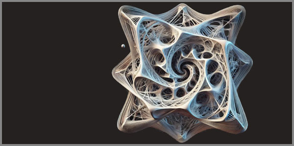

16. Ստեղծագործելու Քիմիան Որպես Անտեսանելի Ճանապարհ
 |
Գաղափարի ալքիմիան սկսվում է անտեսանելիից։ Սա ուղի է, որն անցնում է մարդու ներաշխարհի ամենաթաքնված ծալքերով՝ ոչ թե որպես գծային պրոցես, այլ որպես քաոսային, բայց ներդաշնակ ռեակցիաների շարան։
Այստեղ խոսքը «ինչպես»-ի և «որտեղից»-ի մասին է։ Որտեղից են գալիս գաղափարները։ Ինչպես են դրանք հասունանում։ Ինչպես են անտեսանելի նյութերը՝ զգացմունքները, հիշողությունները, պատկերները, խառնվում և վերածվում ստեղծագործական ակտի։ Մենք կփորձենք լուսաբանել այն քիմիան, որն աննկատելիորեն կառավարում է ստեղծագործական գործընթացը։
Ստեղծագործությունը մարդու գոյության մետաֆիզիկական պարամետրն է՝ անձնական և կոլեկտիվ անգիտակցության սահմաններում նյութականացված գաղափարի կառուցվածքային արտահայտումը։ Դա ոչ թե գործողություն է, այլ տրանսցենդենտալ փոխակերպման պրոցես, որտեղ սուբյեկտիվ փորձը վերածվում է օբյեկտիվ արժեքի՝ արվեստի ոլորտում դառնալով գեղագիտական մանիֆեստ։
Այստեղ, իմացական անալիզը հանդիպում է պոետիկայի հետ, նեյրոգիտությունը՝ մշակութային արքետիպերի հետ, քաոսի տեսությունը՝ սիմվոլիզմի հետ։
Ստեղծագործությունը հոգեբանական և կոսմիկականի սինթեզ է՝ արտահայտված գույնի, բառի, ձայնի, բանաձևի, ռեակցիայի, դրանց սինթեզի կամ ձևի միջոցով։
Բացահայտել ստեղծագործական ակտի ֆենոմենոլոգիական էությունը որպես անտեսանելի ճանապարհ, նշանակում է անդրադառնալ գաղափարի իմաստաբանությանը՝ որպես կոգնիտիվ-զգայական ռեզոնանսի, ստեղծագործական ինտուիցիային՝ որպես սուպերպոզիցիայի դիտարկչի ներքին նյարդային ցանցերում, արվեստի օբյեկտի ձևավորմանը՝ որպես զանազան կոդերի դիալեկտիկական միասնության։
Ներթափանցելով գաղափարի նանոճարտարապետության մեջ, կփորձենք տեսնել, թե ինչպես է անձնական տրավման վերածվում ունիվերսալ գեղեցկության՝ որպես գիտակցության ներքին լաբորատորիայի հայելի։
Անտեսանելի ճանապարհը միշտ տանում է դեպի ինքնաճանաչում։
Ստեղծագործելու քիմիան ոչ թե գաղտնիք է, այլ ինքնաբացահայտման լեզու՝ որտեղ յուրաքանչյուր գաղափար, յուրաքանչյուր նյարդային ազդակ, յուրաքանչյուր մշակութային կոդ դառնում է կամուրջ դեպի քո ներսի տիեզերքը։
Պարզապես անցիր այդ կամրջով առանց վախի՝ հիշելով, որ ամենամեծ ստեղծագործությունը քո սեփական գոյությունն է։
Ստեղծագործությունը անտեսանելի ուղի է, որտեղ յուրաքանչյուր գաղափար ծնվում է ոչ թե արտաքին պատճենից, այլ ներքին աշխարհից։
Գաղափարի ալքիմիան որպես անտեսանելիի նյութականացում
Գաղափարները ծնվում են անգիտակցական խորքերում՝ որպես անավարտ իմպուլսներ, զգացողությունների խառնուրդ կամ հիշողության հյուսվածքներ։ Դրանք գոյություն ունեն նախալեզվական վիճակում, զուրկ ձևից և կառուցվածքից՝ կրելով ներքին էներգիա։ Այսպես՝ գաղափարը գտնվում է զուտ հնարավորության կամ սուպերպոզիցիայի վիճակում, նախքան ինչ-որ բան դառնալը։
Յուրաքանչյուր ստեղծագործություն սկսվում է գաղափարի նրբին, անձև նյութից, որը բնակվում է մարդու ներաշխարհի խորը շերտերում։ Այն կարող է ծնվել երազից, հիշողությունից, կամ անբացատրելի զգացողությունից։ Սա գաղափարի «հումքն» է, նրա հնարավորությունը, նախքան այն կդառնա բառ, գույն, ձայն կամ ձև։
Ստեղծագործական գործընթացը հաճախ համեմատվում է ալքիմիայի հետ, որտեղ այս անձև նյութը ենթարկվում է վերափոխման։ Արտիստը, գիտնականը կամ գրողը դառնում է այդ վերափոխման կատալիզատորը՝ օգտագործելով ինտուիցիան, գիտելիքը, հմտությունները և ներքին զգայունությունը՝ հումքը դարձնելով ավարտուն ստեղծագործություն։
Գաղափարի նյութականացումը հաճախ սկսվում է անորոշ մի զգացողությունից, ներքին մի ազդակից, որն ի սկզբանե հստակ չի լինում։ Այս փուլում ստեղծագործողը նմանվում է մի հետախույզի, որը փորձում է բռնել անուրջների թելերը և դարձնել դրանք իրական։ Այստեղ կարևոր է ոչ միայն երևակայությունը, այլև ներքին լռությունը, որի մեջ գաղափարը սկսում է ծագել և ծավալվել։
Մարդու գիտակցությունը անընդհատ ստեղծում է կապեր տարբեր գաղափարների միջև, զգացողությունների և հիշողությունների միջև, որոնք դառնալով բավականաչափ հզոր, սկսում են արտաքին արտահայտություն փնտրել։ Դա կարող է լինել բառ, որը գրվում է թղթի վրա, գույն, որով լցվում է կտավը, կամ նոտա, որ հնչում է դաշնամուրի ստեղներից։
Գաղափարի ալքիմիան մի բարդ, բազմաշերտ գործընթաց է, որը սկսվում է անտեսանելի խորհրդանիշներից և ավարտվում է կոնկրետ արտահայտմամբ։ Այն պահանջում է ինչպես ներքին զգայնություն, այնպես էլ արտաքին հմտություններ, ինտուիցիայի և տեխնիկայի ներդաշնակ համադրություն։ Հենց այս միաձուլման մեջ է թաքնված ստեղծագործության կախարդանքը։
Գաղափարի ալքիմիան ցուցադրում է մի կախարդություն, որից ստեղծագործության մարմինն է հյուսվում:
Ուղեղի ստեղծագործական լաբորատորիան
Մարդու ուղեղը ստեղծագործության լաբորատորիա է, ուր նեյրոնային ցանցերը չեն գործում որպես պարզապես կենսաբանական միավորներ, այլ՝ որպես անտեսանելի ռեակտիվ տարածքներ, որտեղ միաձուլվում են հիշողությունը, զգացմունքները, հիմնական գիտելիքները և ենթագիտակցական ազդակները։ Յուրաքանչյուր միտք, հիշողության թել կամ զգացմունք դառնում է նյութ՝ վերափոխման, կապվելու և սինթեզվելու այլ որակի, ենթարկվելով ինտուիցիայի և գիտելիքի ներդաշնակ, բայց քաոսային ազդեցությանը։
Ստեղծագործական գործընթացը կարող է հմեմատվել կամ ընկալվել որպես ալքիմիա որի մեջ նեյրոնների էլեկտրաքիմիական ազդակները խառնում են «հում» մտքերը և ստեղծում նոր կապեր, որոնք առաջին հայացքից ոչ մի տրամաբանական ձև չեն ունենում։ Բայց հենց այդ բարդությունը և ոչ գծային դինամիկան է ստեղծագործության հիմքը՝ թաքցնելով այն անտեսանելի ռեակցիաները, որոնք ծնեբեկում են գաղափարների նոր աշխարհներ։
Անհատական փորձը, տրավմաները, ուրախության ու վախի նրբերանգները ներառվում են այս լաբորատորիայի գործառույթներում՝ դառնալով ստեղծագործական ռեակտիվի կոմպոնենտներ։ Միևնույն ժամանակ, մշակութային արքետիպերը և սիմվոլները, լեզվական և գրական կոդերը ներգրավվում են նույն պրոցեսում, ձևավորելով մի ներդաշնակ, բայց գեղագիտաքաոսային համակարգ, որտեղ անհատականն ու համամարդկայինը միահյուսվում են։
Ստեղծագործությունը հաճախ սկսվում է մանր, գրեթե աննկատ ազդակից՝ հիշողության փխրուն կտորից կամ երազի մորմոքից, որը ուղեղի նանոծալքերում թրծվում է իբրև գաղափար։ Այս լաբորատորիայի իմաստը ուղեղի դինամիկ շերտերի միահյուսումն է գիտակցության բազմաշերտ համակարգի և վերածումը ստեղծագործական ալքիմիայի։ Ստեղծագործության լաբորատորիան ցույց է տալիս, որ գաղափարն ինքնին հումք է, որը միայն պետք է ճիշտ միջավայրում թրծվի, դառնա իրական և արտահայտվի արտաքին աշխարհում։
Նեյրոնային ցանցերում, որպես ստեղծագործության անտեսանելի պրոցեսի ռեակտիվ տարածքներ՝ մտքերը, զգացմունքները և հիշողությունները հունցվելով խառնվում և ծնեբեկում են նոր գաղափարներ։
Տրավմայից գեղեցկություն կամ անձնականի փոխակերպումը ունիվերսալի
Տրավման մարդկային փորձի ամենաանմիջական և համարձակ ռեակտիվն է։ Այն, ինչ թվում է անձնական ցավ, կորուստ կամ վախ, իրականում պահում է ներքին էներգիայի հզոր պաշար՝ պատրաստ դառնալու հումք ստեղծագործության համար։
Մարդու ուղեղն ու հոգին այն լաբորատորիան են, որտեղ տրավմայի թանձր ազդեցությունը ենթարկվում են քիմիական ու նեյրոնային կերպափոխման՝ դառնալով զգացմունքային, ճանաչողական և սիմվոլիկ։
Անհատական տրավմաների վերածնունդը գեղեցկության մեջ միշտ հենվում է ինտուիցիայի և մշակութային կոդերի վրա։ Երբ զգացմունքային ազդեցությունը միաձուլվում է արքետիպերի, սիմվոլների ու հիշողությունների հետ, այն վերածվում է մի լեզվի, որը կոչվում է ստեղծագործություն։ Այս լեզուն ունի մեկ բացառիկ հատկություն՝ այն չի սահմանափակվում միայն հեղինակով, այլ դառնում է ունիվերսալ, կապելով անհատական տառապանքն ու հաճույքը համամարդկային զգացողությունների հետ։
Այս գործընթացը կարելի է դիտարկել ոչ միայն հոգեբանական, այլև ֆենոմենոլոգիական տեսանկյունից: Տրավման պատրանք չէ, այլ խորը ազդակ և հզոր էներգիա՝ ուղեղի և գիտակցության լաբորատորիաների մեջ այնպիսի ռեակցիաներ առաջացնելու համար, որոնք ծնունդ են տալիս նոր իմաստի, նոր ձևի և նոր արտահայտություն։ Այդ ռեակցիան տարածվելով ստեղծագործական համակարգում դառնում մի խորհրդանիշ, որը հասկանալի է դառնում բոլորի համար՝ վերածվելով ստեղծագործական գեղեցկության։
Անհատական տրավման դառնալով արվեստի ու ստեղծագործության հումք, ներքին ցավը կերպափոխելով համընդհանուր լեզվի՝ հենց այդ միջոցով է ճանաչելի դարձնում ոչ միայն սեփական ներաշխարհը, այլև համամարդկային գեղեցկությունը, ձևավորելով հանգույց, որը միավորում է անձնականը և համամարդկայինը ստեղծագործության անեզրության մեջ։
Անհատական ցավը սուպերպոզիցիոն հավանականությամբ կարող է վերածվել համընդհանուր գեղեցկության՝ ստեղծագործության լեզվի միջոցով դիտերկվելով։
Սիմվոլն ու արքետիպը որպես մշակութային կոդերի դիալեկտիկա
Մարդու ներաշխարհից բխած աշխարհը կերտված է սիմվոլների ու արքետիպերի միջոցով, որոնք ձևավորված մշակութային կոդեր են մեր ընկալումների, պատկերացումների և զգացմունքների հիմքում։ Սիմվոլն ինքնին ոչ միայն նշան է, այլև կրում է պատմության, մշակույթի և հոգեբանության բազմաշերտ դինամիկաներ, իսկ արքետիպը՝ այն մշտական, ոչ անհատականացված ձևն է, որը ծառայում է որպես հասարակ մարդկային փորձի հիմք։
Ստեղծագործական պրոցեսում սիմվոլներն ու արքետիպերը գործում են դիալեկտիկ ռեակցիաների արհավիրքում՝ բախելով միմյանց անհատական ազդեցությունները և համամարդկային մշակութային կոդերը։ Այդ հանդիպման արդյունքում ծնվում է նոր իմաստ, որը արտահայտում և սինթեզում է հեղինակային փորձը համընդհանուր զգացողությունների մակարդակում։
Այս դիալեկտիկ պրոցեսը ցույց է տալիս, որ ստեղծագործությունը երբեք չի ստեղծվում «դատարկ տեղում»: Այն միշտ գտնվում է պատմության, մշակույթի և հոգեբանության մշտական հոսքերում, և յուրաքանչյուր ստեղծագործական ակտ դառնում է կամուրջ անհատական ներաշխարհի և համամարդկային կոդերի միջև։
Սիմվոլներն ու արքետիպերը ոչ միայն արտահայտում են մեր ներաշխարհը, այլև ծառայում են որպես մշակութային լաբորատորիայի գործիքներ՝ վերափոխելու անհատական ազդեցությունները համամարդկային իմաստի և գեղեցկության։
Սիմվոլներն ու արքետիպերը ստեղծագործության միջանկյալ կոդերն են, որոնց միջոցով անհատական զգացմունքներն ու համամարդկային իմաստը միաձուլվում են՝ ստեղծելով նոր գեղեցկություն։
Ստեղծագործության ֆենոմենոլոգիան որպես իմացաբանական անցում
Ստեղծագործությունը չի սահմանափակվում միայն արտահայտվող արդյունքով՝ այն նույնքան կարևոր է որպես փորձ՝ որպես գործընթաց, որով սուբյեկտը անցնում է սեփական ներաշխարհի խորքերով և դուրս է գալիս համամարդկային տարածք։
Ֆենոմենոլոգիական մոտեցումը դիտարկում է ստեղծագործական ակտը ոչ թե որպես պատրաստի արտահայտություն, այլ որպես իմացաբանական անցում, որտեղ գիտակցությունը և ենթագիտակցությունը իրար հետ շփվելով արձագանքվում և փոխակերպվում են փոխադարձաբար։
Մարդու ուղեղի ստեղծագործական լաբորատորիան, էներգակիր ու ռեզոնանսակիր ազդակների վերափոխման և սիմվոլների ու արքետիպերի դիալեկտիկական ձևավորման մի համալիր համակարգ է, որտեղ յուրաքանչյուր ազդակ, յուրաքանչյուր փորձ և յուրաքանչյուր հիշողություն դառնում են գիտելիքի նյութ, որը կարող է ստանալ արտահայտություն՝ գույնի, բառի, ձայնի կամ ձևի միջոցով։ Ստեղծագործությունը, այս իմաստով, ծառայում է որպես միջանցք՝ անհատական նեյրոնային, հոգեբանական և մշակութային ազդակներից դեպի համամարդկային իմաստի ստեղծում։
Ստեղծագործությունը ոչ միայն զգայականի արտահայտություն է, այլ նաև իմացաբանական անցում է անհատական գիտակցումից դեպի համընդհանուր ընկալում։
Ինտուիցիայի և մեթոդի միասնությունը որպես ստեղծագործության քիմիա
Ստեղծագործության ամբողջ գործընթացը, սկսած ուղեղի լաբորատորիայի նեյրոնային ռեակցիաներից, տրավմայից կամ այլ էներգակիր ազդակներից, սիմվոլների ու արքետիպերի դիալեկտիկայից և ֆենոմենոլոգիական անցումներից, հասնում է իր գագաթնակետին՝ ինտուիցիայի և մեթոդի միասնության մեջ։
Այս միասնությունը ստեղծագործության քիմիական ռեակցիայի էական բաղադրիչն է, որը կապում է անհատական ներշնչումը, գիտելիքը, հմտություններն ու դրանց տեխնիկական ասպեկտները՝ մի նոր իրականություն ստեղծելու համար։
Ինտուիցիան դառնում է ռեակցիայի կատալիզատոր, հզորացնելով աննկատ ազդակներն ու զգացմունքները, որոնք առաջանում են մարդու ներաշխարհի ամենաթաքնված ծալքերում։
Մեթոդը՝ իր հստակ կառուցվածքով և կանոնակարգված պրոցեսներով, ապահովում է, որ այդ էներգիան ուղղվի արտահայտության կոնկրետ ձևի և հաղորդման։
Ինտուիցիայի և մեթոդի ներդաշնակության պայմանում, «հում» ներքին նյութը անցնում է քիմիական, նեյրոնային ու մշակութային ռեակցիաների ամբողջական պրոցեսով, որը ծնեբեկում է ստեղծագործություն՝ եզակի, հզոր և համընդհանուր իմաստով։
Ստեղծագործության այսպիսի համակարգը ցույց է տալիս, որ ոչ մի գաղափար կամ զգացողություն չի մնում անպատասխան, ոչ մի ազդակ չի կորցնում իր ներդաշնակությունը։ Ամեն մի տարր գտնում է իր տեղը համընդհանուր ստեղծագործական դաշտում՝ դառնալով մի ամբողջության մաս, որտեղ անհատականն ու համամարդկայինը, ինտուիցիան ու մեթոդը, զգացմունքներն ու գիտակցությունը միահյուսվում են՝ ստեղծելով այն անտեսանելի գեղեցկությունը, որը կոչվում է ստեղծագործություն։
Ստեղծագործության քիմիան՝ ինտուիցիայի և մեթոդի ներդաշնակ միաձուլման արգասիքն է, որտեղ անհատական ներշնչումը կերպափոխվում է համամարդկային լեզվի ու գեղեցկության։
Վերջաբան
Ստեղծագործության քիմիան անվերջանալի ռեակցիա է՝ որտեղ դուք և ռեակտիվն եք, և ռեակցիայի արգասիքը։ Անտեսանելի ճանապարհը, որին մենք հետևեցինք, ի վերջո տանում է դեպի մի հասկացողություն, որ ստեղծագործելը գոյություն ունենալու առավել խորը ձևն է։
Այստեղ՝ գաղափարի ալքիմիայի, նյարդային լաբորատորիաների, տրավմայի վերափոխման և մշակութային կոդերի դիալեկտիկայի միջոցով մենք հասկացանք, որ ստեղծագործությունը միակ լեզուն է, որ կարող է արտահայտել անարտահայտելին։
Առանց մոռանալու, որ ամենամեծ ստեղծագործությունը դու ես, թող յուրաքանչյուր գիծ, յուրաքանչյուր գույն, յուրաքանչյուր բառ, դառնա այն կամուրջը, որը միավորում է քո ներքին աշխարհը արտաքին տիեզերքի հետ, որովհետև ստեղծագործելու գործընթացը ոչ միայն երբեք չի ավարտվում, այլև դադարում է լինել անտեսանելի:
Ներքին տիեզերքի պայթյունից ծնվող ստեղծագործությունը խոսում է համամարդկային լեզվով՝ արտահայտելով անարտահայտելին:
«Մենք կառուցում ենք կամուրջներ այնտեղ, ուր մյուսները տեսնում են միայն անդունդներ։»
© 2026 Մոնումենտալ Կամուրջ: Այս կայքի բովանդակությամբ կարող եք ազատորեն կիսվել համացանցում՝ հղում տալով սկզբնաղբյուրին: Տպելու, տպագրելու կամ գիրք կազմելու միջոցով, կամ այլ ֆիզիկական ձևով և որևէ տեխնոլոգիական կրիչով տարածելը առանց հեղինակի գրավոր համաձայնության արգելվում է: Գիտական, կրթական կամ ստեղծագործական աշխատանքներում մեջբերումները թույլատրելի են պայմանով, որ պարտադիր պետք է նշվի կոնկրետ էջի ամբողջական հասցեն (URL) և աշխատության վերնագիրը: Առանց հեղինակի գրավոր համաձայնության՝ արգելվում է նաև կայքի նյութերի թարգմանությունը որևէ լեզվով և դրանց տարածումը այլ լեզուներով: